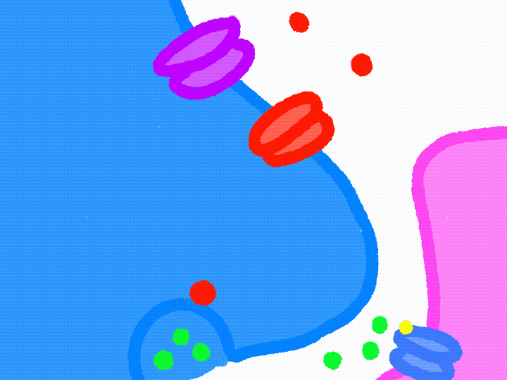

How can muscle contraction be smooth and continuous: calcium ions that enter the axon terminal are eventually removed from the cytoplasm through active transport by calcium pumps. This helps restore the calcium balance inside the terminal.
